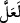

peygamberlerin kendisine vahyedilenler konusunda hıyanet etmekten mâsum olmaları ve
onları tebliğde güvenilir olmalarıdır.
Âyette “”nin ikinci kullanımı kastedilmiş olabilir. Buna göre mânâ şöyle olur:
“Sana müşriklerin görüşlerine muhalif olarak vahyedilenlere karşı çıkıp alay
edeceklerinden korkarak tebliğ etmeyi terk etme konusunda kendin hakkında endişe
duy.” Bu ikinci yorum, birincisinden daha güzeldir. Nitekim Semerkandî’nin Bahru’l-
ulûm’unda böyle geçmektedir.
Kâşifî der ki: “Belki de sen … terk edecek olursun.” Yâni eğer sen terk edecek
olursan demektir. İmam Mâtürîdî buradaki sorunun yasaklama mânâsına olduğunu
söylemiştir. Yâni terk etme demektir.
“Ona bir hazine” hükümdarlar gibi peşinden gidecek kişiler bulma ve diğer
konularda harcayıp yardımını göreceği bir mal gökten “indirilmeli”…
Şeyhzâde der ki: “Kenz” hazine yapılabilecek; yani defnedilebilecek kadar fazla olan
maldır. Kenz, defnedilen mal demektir ki böyle bir şey gökten inmez. Bu bakımdan
buradaki kenzden maksadın hazine yapılabilecek kadar bir mal olması gerekir. Çok
mala hazine denmesi öteden beri bir gelenektir.”
“veya beraberinde” sözlerinin doğruluğuna şâhidlik edecek, maksad ve emeline nail
olmasına yardımcı olacak “bir melek gelmeli” ve peygamber olup olmadığı
konusundaki şüphe kalkmalı “değil miydi?” demelerinden ötürü sana vahyolunanın
bir kısmını terk edecek olursun” Nitekim Mekkeliler’in elebaşları şöyle dediler: “Ey
Muhammed, eğer peygamber isen Mekke dağlarını altına çevir.” Bazıları da “Melekleri
bize getir de peygamber olduğuna şâhidlik etsinler!” diyorlardı.
“ve bu yüzden göğsün daralır.” Vahyedilenleri müşriklere okuyup tebliğ etmekten
dolayı dâvet ve tartışma esnâsında belki sana göğüs darlığı ârız olur. Âyetten bu göğüs
daralmasının dâimi olmayan ârızî bir durum olduğu anlaşılmaktadır. Çünkü Rasûlullah
(a.s.) insanların göğsü en geniş olanıdır.
“Sen ancak bir uyarıcısın.” Sana düşen sadece insanları sana vahyedilenlerle
uyarmaktır. Reddetmeleri, alay etmeleri, olmadık tekliflerde bulunmalarından dolayı
senin bir sorumluluğun yoktur.
“Allah, her şeye vekildir.” Öyle ise sen de O’na tevekkül et. Çünkü O, onların
durumunu bilmektedir. Sözlerinin ve fiillerinin cezasını verecektir.
Kevâşî der ki: “Âyetin özeti şudur: Sen onlara hiç aldırmadan risalet görevini yerine
getir. Ben onlara karşı seni korur, sana yardım ederim.”
Mehtaplı gecede Ay semâ üzerinde
Köpeklerin o Ay’a havlamalarının ne zararı vardır
Fahreddin Râzî, Mefâtîhu’l-gayb isimli tefsirinde şöyle der: “Vekil, kulların işlerini
ve muhtaç oldukları şeyleri elde etme vazifesini üstlenen demektir.” ‘Yaratılanların
idâresinin kendisine bırakıldığı’ mânâsına geldiği de söylenmiştir.